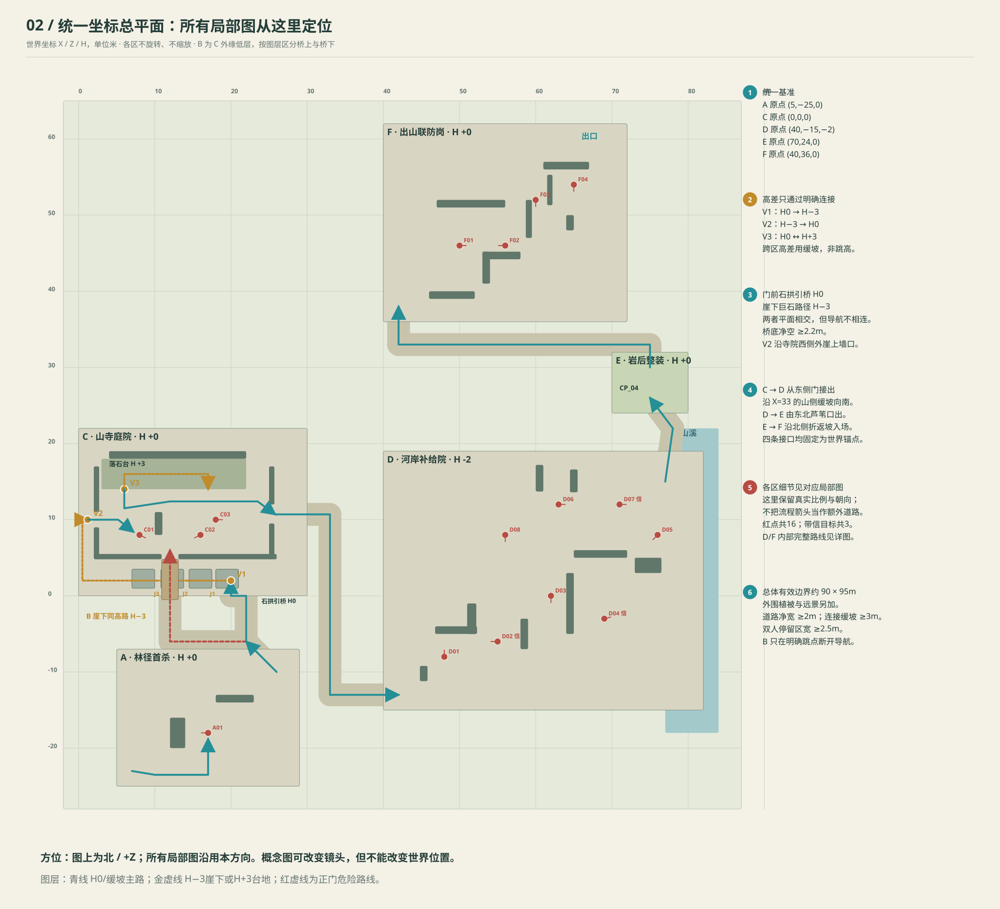
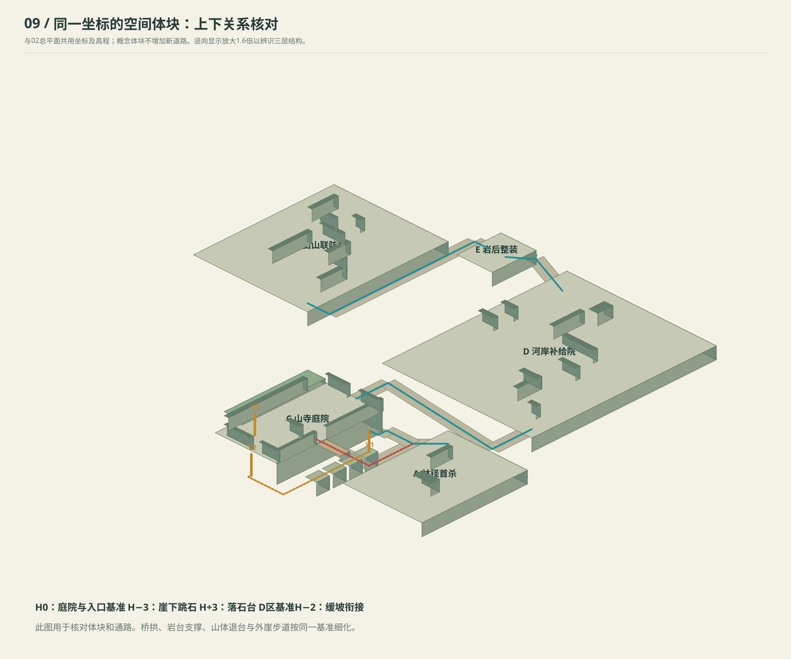
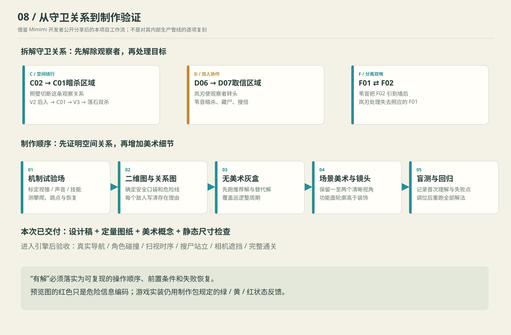
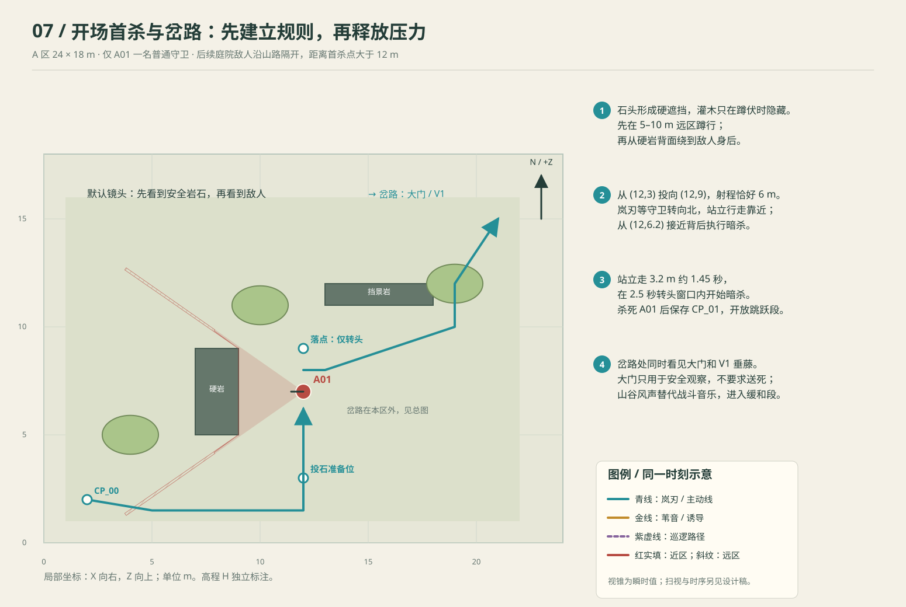
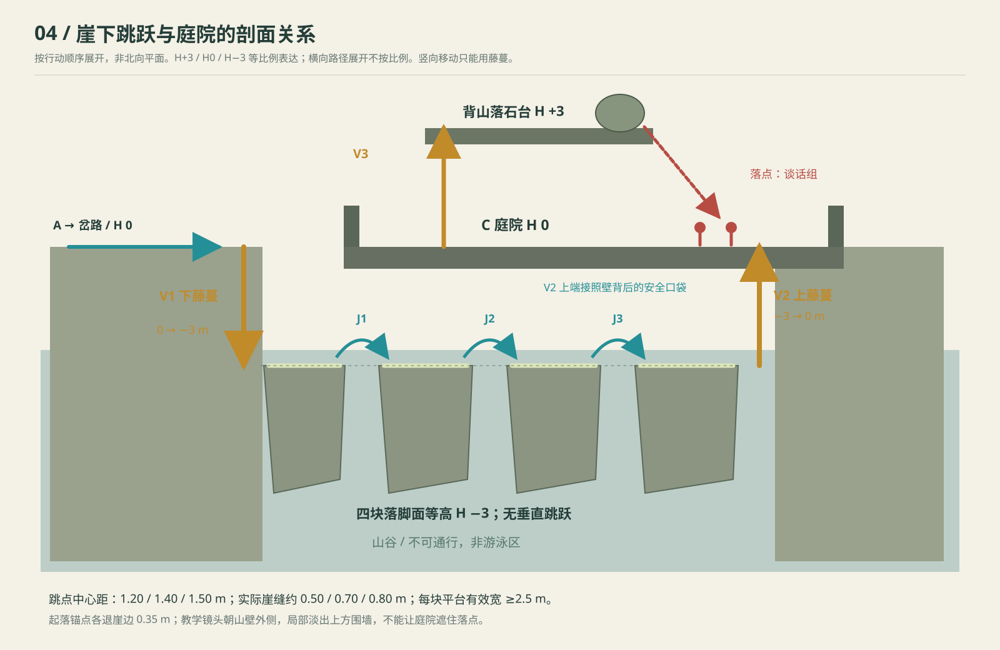
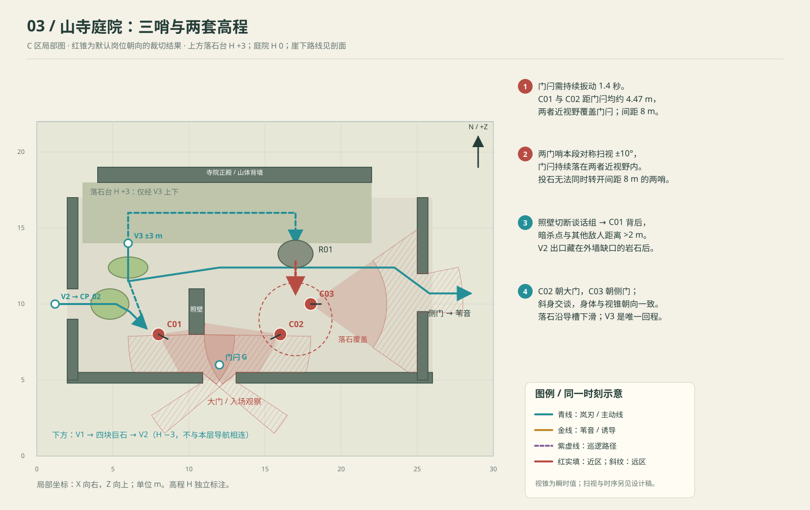
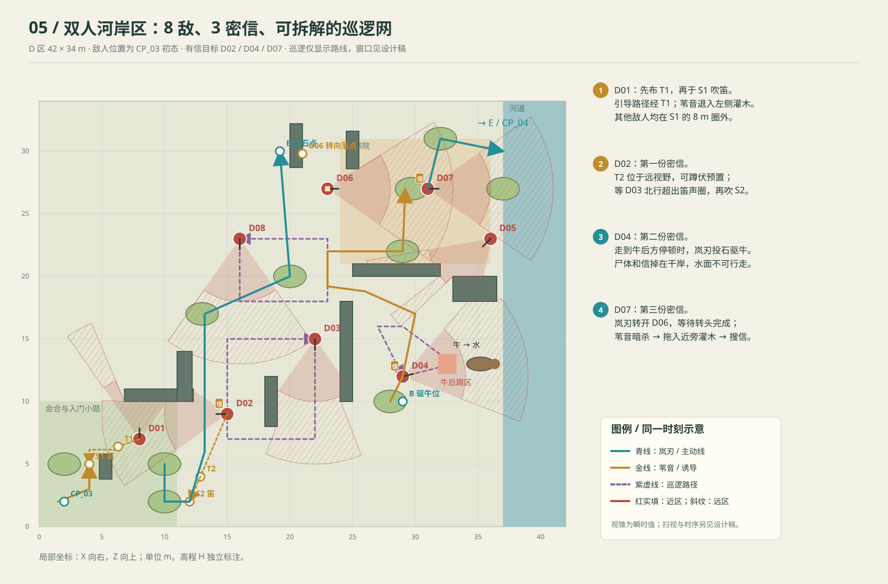
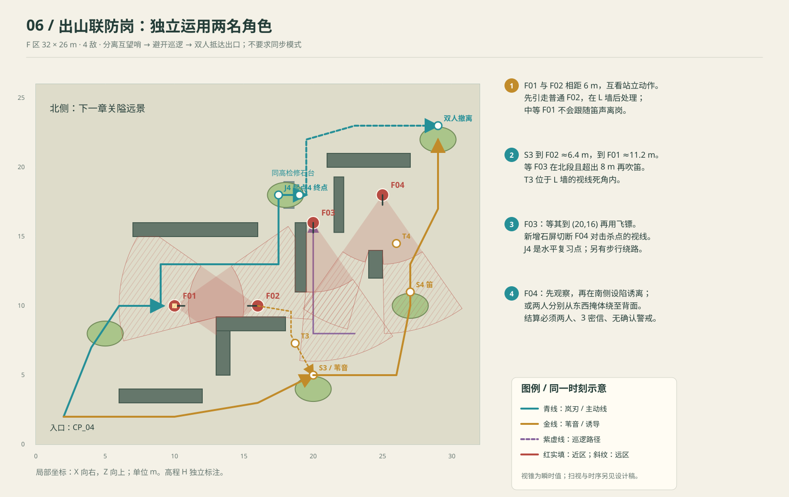

林间无声 · 山寺暗渡
首关关卡设计 v2.0｜2026-09-26｜供灰盒、美术与程序共同评审
设计主题：正路受阻，向下寻找绕行；进入敌人背后，再用两人的能力拆开守卫关系。
本方案依据本地《林间无声_21天GameJam制作包》00—06及《程序补充_视野警戒与敌人身份_v1.1》，以本次要求覆盖旧首关的场景与流程。原包的角色定位、技能尺度与警戒规则继续作为基础。图纸是第一轮可搭建的设计坐标，概念图是美术方向；尚未搭建游戏引擎灰盒，不将纸面方案表述为已经试玩验证的成品。
01 · 先看整体

根据统一总图与轴测体块生成的整体样貌：右下为林径、左中为山寺、寺外下层为四块跳石、右侧为河岸院、后方为整装点与出山哨。四块石顶按同一高程制作；图像透视不代表可以逐级跳高。精确敌人坐标、净宽与高差以战术图及表格为准。
| 区段 | 玩家目标 | 新增认知 | 敌人数 | 预计初玩 |
|---|---|---|---|---|
| A 林径首杀 | 岚刃处理第一名守卫 | 看视野、蹲行、投石转头、背后暗杀 | 1 | 2—3分钟 |
| B 崖下绕行 | 大门前观察后，下藤、平跳、上藤 | 水平跳跃与垂直攀爬分工；绕道可以占据优势 | 0 | 2—3分钟 |
| C 山寺庭院 | 后入处理独哨，上台落石杀谈话组 | 硬遮挡切断照应；环境杀解决成组敌人 | 3 | 4—5分钟 |
| D 河岸补给院 | 会合苇音，取三名敌人身上的密信 | 切人、陷阱与笛声、藏尸、飞镖、牛后踢、互补配合 | 8 | 9—12分钟 |
| E 岩后整装 | 三信核对，双人抵达 | 目标收束与短暂休息 | 0 | 约1分钟 |
| F 出山联防岗 | 运用已有技能，双人撤离 | 分离互望哨、巡逻窗口、两线汇合 | 4 | 4—6分钟 |
合计16名敌人，完整首玩预算约22—30分钟，熟练通关可明显缩短。这比原包的“7敌、1目标、10—15分钟”扩张较大：本次明确要求的跳跃、三敌庭院、八敌双人区、终段都保留；制作时通过模块复用和压缩过渡路控制成本，不继续按原包时长验收。

整体是沿山展开的折线，不是一条平直走廊。A在山腰来路，C在其上方的寺院台地；B贴着C外侧下方通过。C侧门沿缓坡到达D河岸，D后侧绕上E岩后平台，再接F山口。图中每区使用自己的局部坐标，X向右、Z向上、H为高程；局部H=0不代表全地图绝对海拔相同，过渡坡道连接各区。
空间锁定规则：全部局部图保持相同的北向，不旋转、不缩放；世界坐标=局部坐标+下表原点。 02总图已按这套坐标重绘，概念画面的透视不得反过来改变施工布局。
| 区域 | 世界原点X/Z/H | 局部范围 | 固定接口 |
|---|---|---|---|
| A | (5,−25,0) | 24×18m | 局部(21,15)对应世界(26,−10)，接岔路(22,−6) |
| B | 与C共用X/Z基准，H−3 | C外崖南侧转西侧 | V1=(20,2)，V2=(1.2,10)，上下端X/Z相同 |
| C | (0,0,0) | 30×22m | 侧门(25.8,10.7)接(33,10.7)，沿X=33缓坡到(33,−13) |
| D | (40,−15,−2) | 42×34m | 入口局部(2,2)=世界(42,−13)；出口局部(37,30)=世界(77,15) |
| E | (70,24,0) | 10×8m | 由(77,15)经(78,22)到(75,26)；出口(75,30) |
| F | (40,36,0) | 32×26m | 由E经(75,33)、(42,33)到入口(42,38)；终点(69,59) |
正门前设置宽2.2m的石拱引桥H0，跨过H−3跳石路；这是一处明确的上下交叉，桥下净空至少2.2m，两个导航层没有连接。B沿南侧跳石从东往西行，再贴寺院西侧外崖到V2，向上进入墙口；不从院内实心地基穿过。C→D缓坡降2m，D→E缓坡升2m，均不需要跳高。整图含过渡带约90×95m，路程以引擎实际寻路测量，不用缩略图估算。

02 · 如何参考两款作品的制作思路
参考《影子战术：将军之刃》和《赏金奇兵3》的设计方法与公开制作经验，保留本项目的中国山寺、岚刃与苇音设定。
| 公开材料中可以核实的内容 | 本关的具体落实 |
|---|---|
| 《赏金奇兵3》关卡设计师Felix Friedlein描述：区域通常控制在默认镜头约1—1.5屏，并为复杂遮挡保留一至两个自然观察角度 | D分为入口、河湾、文书院三个局部题；B提供外侧镜头，C的照壁与树冠可淡出。不能要求玩家同时记住全区八个视锥 |
| 创意总监Dominik Abé谈到推荐路线与支线，同时支持玩家运用开放机制发展自己的方案 | A—C给明确推荐教学；D、F分别提供陷阱、飞镖、环境杀或绕行的替代组合。三名带信敌人仍须击杀，这是本关任务要求 |
| 同一访谈强调精确反馈、可理解失败、低随机性和反复尝试 | 固定巡逻、稳定调查终点、显示受笛声影响的敌人、显示牛踢范围；采用短段作者检查点 |
| 《影子战术》GDC复盘页面明确涵盖角色、关卡、叙事节奏与生产挑战 | 每一段同时写教学目的、情绪作用、空间结构和验收条件，避免只画好看的大地图 |
来源：Felix Friedlein的《Desperados 3》关卡作品与说明、Dominik Abé开发者访谈、GDC 2018《Shadow Tactics》复盘摘要。Felix个人站另收录《Desperados III—Designing a Level the Mimimi Way》演讲入口。本次核实了文字资料及演讲信息，没有把未逐段观看的视频细节当作已核实结论。

“机制标定→关系图→灰盒→时序测试→美术接入→盲测回归”是结合上述材料提出的本项目执行顺序，不声称是Mimimi内部管线的逐项复刻。
03 · 统一规则与原包冲突处理
| 项目 | 本版口径 |
|---|---|
| 主角 | 岚刃先出场；苇音在C侧门外会合后可操控；两人共通暗杀与拖尸 |
| 岚刃 | 投石射程6m、落地声3.5m、转头2.5秒；飞镖射程6m、库存1、需回收；飞镖到D区再解锁 |
| 苇音 | 陷阱1个、放置距离1m、触发半径0.45m、可回收；笛声8m、所有范围内普通守卫都会前来 |
| 视野 | 总角70°，近区5m，远区10m；近区蹲伏仍可见；远区蹲伏不可见；硬掩体挡视线，灌木须蹲伏 |
| 扫视 | 一般哨兵按v1.1的±40°对称扫视；C01/C02/C03为本段特殊配置±10°，身体与视锥一起转动。巡逻行进按路径朝向，停留再扫视 |
| 警戒 | 采用v1.1公式：T(d)=max(0.35,d/10)，近区暴露0.8/秒，远区0.4/秒；确认后连续可见3秒判负。暴露衰减0.6/秒 |
| 文档歧义 | v1.1称新阈值与旧“暴露满1”是同一描述，数学上并不等价；本版明确采用新距离阈值，避免两种计时并存。2—3.5m内有Floor，因此黄色“触及”只是近似解释，确认用公式并同步转红 |
| 攀爬 | 成对藤蔓锚点，每次高差3m，暂用1.6秒；按v1.1的定点攀爬实现。推荐路线在硬遮挡后，不依赖攀爬保护来通过守卫 |
| 高差 | H−3的崖下路、H0庭院、H+3落石台分离导航层；沿用v1.1高度差>2.5m不检测的简化规则，并用崖体/实墙支持视觉解释；声音仍按平面距离计算 |
| 跳跃 | 指定起落点，同高；1.2/1.4/1.5m三段锚点间距。动画可抛物线抬脚，但不能借此落到更高平台；攀爬解决竖向变化 |
| 键位 | v1.1仍有待选方案，关卡教学用动作名与输入绑定占位符，不把Q/E、数字键写死到图中 |
| 身份 | 本版14普通、2中等（D06/F01）；首关不追加不可处理的特殊敌人，以免同时增加新规则。中等守卫不随笛声离岗，可以投石转头并暗杀 |
| 新增任务 | 文书由一个箱子改为三名守卫掉落的唯一密信ID；计数0/3—3/3，小队共享 |
| 同步模式 | 可选；所有推荐解都能靠切人和预先站位完成 |
图纸红色视锥统一表示战术危险范围，游戏中仍执行原包规定的绿／黄／红状态。地图画的是默认朝向的瞬时锥，不把一张静态图当作整个巡逻周期的安全证明。
04 · A区：第一次出手

局部24×18m；首敌A01=(12,7)，默认朝西。岚刃起点(2,2)，先经硬岩后的安全口袋学习镜头与蹲行，再沿南侧远区到(12,3)。投石目标(12,9)，与施放点相距6m，距敌人2m。
石子使A01朝北，岚刃从南侧走至(12,6.2)，在0.9m暗杀范围内执行。3.2m步行按原包2.2m/s约需1.45秒，玩家等敌人完成转向后开始移动，在2.5秒注意窗口内开始暗杀；暗杀开始即锁定受害者，不要求1.2秒动画也全部塞进剩余窗口。首次提示明确“普通行走接近，不要双击奔跑”。
其他敌人与首杀点相距大于12m，暗杀不会引来第二个问题。A01死亡后才完成本次指定首杀教学，保存CP_01；若玩家绕过，提示“先完成背后出手练习”，不临时生成敌人堵路。这个局部教学门槛是本次对原包“可不杀首敌”的明确调整。
从尸体旁走到岔路时，战斗音乐退下，出现风声与寺院檐铃。第一眼看见大门，第二眼看见断护栏、磨损石边和往下垂的藤蔓，读到：“门口有人盯着。沿崖下绕过去。”不要求玩家故意被发现才能出提示。
05 · B区：用一次缓和段教会水平绕行

顺序：V1下藤（H0→H−3）→J1→安全停顿→J2→J3→V2上藤（H−3→H0）。所有跳石顶面同高。庭院沿岩壁占据路线内侧上方，外缘围墙、地基和谈话声让玩家感到“正从敌人脚下绕过去”。崖下并非穿进实心山体的隧道：俯视投影在庭院外缘外侧，剖面才显示其上下关系。
| 跳点 | 锚点距离 | 崖缝净宽 | 平台要求 | 教学作用 |
|---|---|---|---|---|
| J1 | 1.20m | 0.50m | 起落锚点各退边0.35m；落脚面宽≥2.5m | 提示点击跳点，不要求反应操作 |
| J2 | 1.40m | 0.70m | 落地后至少2m安全停留深度 | 去掉大卡，只留地面图形 |
| J3 | 1.50m | 0.80m | 终端平台容纳攀爬前整姿 | 让玩家自己发现V2 |
四块巨石的整体间隔只提供横向跨越；不放阶梯状石块暗示可跳高。指定跳跃0.8秒、无空中操控、失败点击不导致掉崖；落点占用时拒绝开始。B没有巡逻压迫、限时机关、突然塌石，也不把坠落死亡当教学成本。V1前存检查点，错误操作不重做首杀。
镜头从山谷外侧看岩壁；进入B时上方院墙可局部淡出，并允许玩家旋转查看。V2上端是墙垛内缩形成的隐蔽维修缺口：爬到墙边石台后同高进入院内，绝不能在藤蔓尽头再要求垂直跳墙。藤蔓末端与NavMesh连接点必须对齐。
06 · C区：大门封锁、背后独哨、上台落石

庭院局部30×22m，主要可玩面约24×12m。南侧为大门，西侧维修缺口接V2，北侧靠山设H+3落石台，东侧侧门通往苇音。C内只有三名敌人。
| ID | 坐标X/Z | 朝向/扫视 | 岗位任务 | 为什么不能随意换位置 |
|---|---|---|---|---|
| C01 | (8,8) | 朝门闩(12,6)，±10° | 单独看大门 | 背后必须靠近V2；暗杀点被照壁遮住，不被谈话组看见 |
| C02 | (16,8) | 朝门闩(12,6)，±10° | 谈话组中仍看门的一人 | 与C01间距8m，使单次3.5m半径石声无法同时影响两哨 |
| C03 | (18,10) | 朝东侧门，±10° | 谈话组中负责侧门的一人 | 与C02保持交谈姿态，但实际守住不同方向；两人都在落石范围内 |
谈话组以半侧身、手势和声音交流，不安排面对面180°转身演出。C02看大门、C03看侧门的职责始终可读；动画必须与感知方向一致。照壁位置(10,8)，占1×3m，隔开C01与谈话组。近身暗杀2m声音不覆盖另外两人。
大门为什么会被发现
大门采用可透视的栅格检修门／栅叶，上方无挡视线横板；两侧实墙挡视线。玩家要先进入门内浅门斗，对(12,6)的操作位持续抬闩1.4秒，才能打开内侧阻挡。外側山路提供安全观察位，踏入门斗后才承担风险。
两哨距操作位均约4.47m，小于近区5m。其中心线对准操作位，扫视±10°小于半视角35°，因此这个操作位全周期被覆盖。按v1.1，零暴露起算的确认时间约0.447/0.8=0.56秒，显著短于1.4秒开门动作。操作中断就复位，不允许累计多次短操作开锁。
第一次来到岔路时只有岚刃的近身暗杀和投石；飞镖未解锁、苇音未会合。单个落点不可能同时覆盖相距8m的两名守卫；投石转头2.5秒短于再次投石冷却3秒，不能用连续两石稳定同时清空视线。实体墙、门斗阻挡与无跳点边界，阻止绕开操作位直接冲入。
因此，在首访技能、守卫仍在岗、无既有警报的教学状态下，直进操作门闩会先被发现。这里保证“发现”，不声称“立刻死亡”；确认后仍可退到石后断视线。若玩家主动引发警报把守卫带走再折返，原有AI可能产生其他高风险解，这类行为不可能仅靠静态视锥做到数学上的绝对封死。为保留战术系统一致性，本版不加“进入大门就自动失败”的脚本，也不把门岗改成无敌。对新手的引导依靠明确危险、可见藤蔓和短提示完成。
推荐操作
- 从V2到(3.4,10)隐蔽缺口，保存CP_02。沿墙背到(5.2,10)，观察C01朝向。
- 从(7.2,8.4)背后暗杀C01。尸体位于照壁保护侧，可拖入(4.8,10)灌木。C02/C03的扫视全周期也不应看穿照壁。
- 沿西北墙脚到V3=(6,14)，爬上H+3的山侧维护台。此藤蔓与V2是两处不同竖向连接，位置和颜色提示一致。
- 走至落石R01的后侧推点(17,14)。巨石从(17,13.3)沿石槽滚落至(17,9)，命中半径2.4m；C02/C03离圆心均约1.41m。
- 确认落区覆盖两人后推石，一次处理谈话组。推石点位于高台，不能从院内远程点击自动攀过去偷做教学。
- 沿V3原路下到庭院，经侧门离开。高台无直接连到侧门的捷径，强化“先利用高处，再返回任务路线”。
落石使用作者配置的滚落曲线、命中区域和状态机，不依赖随机刚体滚向。推动1.2秒、随后滚落0.8秒为本版起始值；同一伤害提交处理落区内全部有效敌人。砸落声音建议6m，C外其他敌人远离该半径。尸体保留常规调查规则，不偷偷给环境杀一个尚未制作的“事故免警报”特例。
R01在未触发时可反复预览；石头落地后侧门路宽仍≥2m，V3下端不被堵。若因此前警报导致谈话组离开落点，允许等待归位再推，也允许近身分别处理；不能推空一次就永久软锁。
07 · D区：八名敌人的职责与三份密信

局部42×34m，东侧河道X≥37不可行走。把它拆成三个相连的观察区：西南入口小题→中央河湾→东北文书院。每个区入口放能容纳双人的安全停留点，玩家只需先理解两三名敌人的关联。
| ID | 坐标/路线 | 默认朝向/停留 | 身份与目标 | 主要关系及建议处理 |
|---|---|---|---|---|
| D01 | (8,7)固定 | 北；教学扫视±20° | 普通，无信 | 苇音首个陷阱目标；从S1只能听见他 |
| D02 | (15,9)固定 | 西，±40° | 普通，密信A | 被D03巡查；引到南侧处理，再把信搜出 |
| D03 | (22,15)→(22,7)→(15,7)→(15,15)→回起点 | 各停3秒；速度1.6m/s | 普通，无信 | 会发现D02尸体；首次飞镖练习可选目标 |
| D04 | (29,12)→(33,13)→(29,16)→(27,16)→回起点 | 牛后点停4秒，其余2秒；1.6m/s | 普通，密信B | 带信河岸勤务兵；经过牛后踢区 |
| D05 | (36,23)固定 | 西南，±40° | 普通，无信 | 看河岸通往文书院的直路；可绕西侧墙后，不必全灭 |
| D06 | (23,27)固定 | 东，±40°；投石观察7秒 | 中等，无信 | 观察D07工作位；不跟笛声离岗；承担双人协作障碍 |
| D07 | (31,27)固定 | 东，±40° | 普通，密信C | 文书兵；背后好接近，但站立暗杀会被D06发现 |
| D08 | (16,23)→(16,18)→(23,18)→(23,23)→回起点 | 各停3秒；1.6m/s | 普通，无信 | 扫查通往D06背侧的西线；作为等待或选择清理的移动压力 |
普通守卫进调查后暂停原巡逻，搜索结束返回再继续；巡逻表描述的是未受干扰的基准周期。不要把表上的秒数当作打乱AI后仍成立的全局时钟。
D-1 苇音：先设陷，再吹笛，再退藏
侧门外，岚刃与苇音停在(2,2)安全口袋，保存CP_03a。提示切到苇音；镜头只框入口小题。T1=(6.3,6.4)，S1=(4,5)。苇音先在T1的1m内布陷，随后退至S1吹笛，动作结束后退入(2,5)灌木。岚刃停在另一侧岩后，避免自动跟随走入视野。
S1到D01约4.47m，到D02約11.70m，其余敌人更远。西侧硬岩挡住S1的起身施法。D01的导航需绕硬岩的东北角，T1放在真实寻路必经处；图上黄色折线是期望通路，接入时必须显示实际路径并将陷阱中心对齐。不能只靠画一条线就认为0.45m触发半径必定命中。
为让第一次布陷安全，D01朝北且只扫视±20°；T1位于其西南背侧。苇音从西侧在(5.4,6.5)附近布置，距T1约0.91m，满足1m放置范围；再从岩石北侧绕回S1。不要求玩家先学会双人限时操作才能学习第一个陷阱。接入后检查这个预置点在完整扫视周期中始终不可见。
成功后明确显示陷阱0/1→回收1/1；还要把尸体拖到邻近灌木。若陷阱放错，D01会到原声源搜索；苇音已经退藏，玩家仍可等其返回重来。回收不作为区域门锁，但后续使用前必须具备库存。
D-2 第一封信：安全布置与巡逻观察
T2=(12.86,4)，S2=(12,2)。T2距D02约5.44m，属远视野，苇音可下蹲预置；布置点本身不要求站起。D02到S2约7.62m，小于笛声8m。等D03完成南段、从(15,7)向(15,15)走至Z≥10后再吹；该段到S2距离大于8m，且后续沿北边与东边返回，留出处理时间。
S2没有绝对免疫：吹笛暂时站立。如果D02正在看向此处，初始暴露为0时，远区确认约需1.90秒，大于1.3秒动作；结束即蹲下并退到(10,2)灌木。已有暴露先等消退，教学不要隐藏黄锥。这是从“硬掩体全安全”过渡到“知道姿态和距离”的受控练习。
D02通向S2的直线路径经过T2，触发后拖入(10,2)灌木，搜索1秒得到密信A。D03会再看向这里，先藏尸再搜信较稳妥。若尸体已引发调查，岚刃可从侧面投石改变观察方向，或等待调查结束后再取信，不立即判任务失败。
获得密信A且双人到(13,17)岩后、无确认警戒时激活CP_03b。重试不要求重复学习陷阱与第一封信。
D-3 飞镖与牛后踢：同一目标提供不同方案
先在中央硬墙后的口袋解锁岚刃飞镖。可选练习是等D03到(22,15)，岚刃从(19.5,18.5)附近的无阻挡角度射击，距离约4.30m；应先确认D08处于北侧(23,23)附近并朝西或西北、距命中点>3m，且其视锥未扫向击杀动作。施法点距D08约5.70m，属于远区；零初始暴露时0.9秒动作短于约1.43秒确认时间，结束恢复蹲伏。消灭D03后去回收飞镖，地图保留回收标记。也可以保留这名巡逻兵，继续利用其周期。
牛位于(35.2,13)，头朝东伸向水边，后方干岸位于X=31.8—33.3、Z=12.2—13.8。D04在(33,13)停4秒，处在后踢区内。河水边界在X=37，击杀及掉信位置始终落在干岸。
推荐配合：苇音先蹲在(28,10)的芦苇灌木观察D04到位；岚刃从(29,10)向牛后蹄附近固定地面点(33.5,13)投石，距离约5.41m。石子到达触发牛的后踢，D04被击杀后苇音靠近搜索，岚刃留在掩体边观察D03/D05的方向。此处苇音作为取信者与警戒观察者，真正的“诱敌+刺杀”互补由下一题强化。
牛是新增环境交互：石子落点进入0.8m触发区→0.35秒蓄力→一次后踢。以固定命中盒判定，不用牛腿碰撞随机命中；可再次触发，冷却4秒，不能因为推早一次失去通关可能。两人也不可站入危险区，预览应同时标出友方风险。牛停留饮水，不实现自由漫游、受惊逃跑或动物AI。
牛踢声暂定4m，周围可能响应的守卫由声音预览统一显示；尸体可被看见并调查。本项目尚未实现事故识别，因此不承诺“牛杀不报警”。D05距指定击杀点约10.44m，初始远视野看不到该尸体；D03与此点足够远，但玩家取信时仍须检查它的巡逻位置。
替代解：等D04离开牛后视线交叉区域，在西侧芦苇布陷阱并吹笛；或岚刃飞镖击杀、苇音搜信，再回收飞镖。至少验证一种不使用牛的完整解，避免环境交互成为唯一通关钥匙。
D-4 第三封信：真正的角色互补
D06=(23,27)朝东，D07=(31,27)朝东。二者相距8m。苇音从河湾经(26,18.8)、(23,19.2)绕屏障西端；等D08离开后再通过(23,22)，到(29,22)灌木，最终停在D07背后(29.5,27)。这条线绕开屏障实体和D05近区；不可直接从(30,17)画直线穿墙。待命点距D07>1.2m，不触发贴脸揭露；她蹲伏时处在D06远区，暗杀站起就会被目击。
岚刃利用西线硬墙和D08离开的窗口，从墙西侧到投石位(19.2,30)，向(21,29.8)投石。落点距D06约3.44m，小于3.5m声音半径。让中等守卫看向西北，等待其按60°/秒转身完成后，苇音才行动。D06的本题观察时长配置7秒，属于v1.1建议的3—8秒范围。
苇音移动到暗杀位(30.2,27)→暗杀D07→抓尸→拖入(29.7,27)灌木→放下→搜信。前四步加放下预算约4.5秒，留约2.5秒给切人和操作余量；搜信可等藏好后再做。D06恢复朝东时看不到隐藏尸体。岚刃站位仍在西北硬墙背后。
如果先后配合失误，优先退回掩体，等待恢复，再用第二颗石头，不追求帧级同步。替代路线是先绕后清理D06，再单独处理D07；需处理D08的巡逻窗口，路径更长，但无需精确切人。另一个替代是飞镖D07，利用投石窗口拖尸取信，仍须验证飞镖射线与声音。
三信可按不同顺序获得；新手推荐A→B→C。密信掉落与尸体分别保存，不因拖尸埋入模型；隐藏尸体仍能显示“搜取密信”交互。击杀持信者不自动得信，必须靠近搜索。落水或落到无导航位置的掉落物投射到作者配置的干岸保底点。
08 · E与F：完成一轮，再独立解题
E是寺后岩坡的小型安全口袋，只承担三个功能：核对三封信、恢复道具、把视线引向最后山口。两人到达、文书3/3、无Confirmed时激活CP_04；提示“密信指向北面的关隘，先一起离开这里”。这里不安排新敌人偷袭。

F局部32×26m，四敌，中上难度来自互相观察、移动窗口、两人分别站位，不来自再增加一种新技能。
| ID | 坐标/路线 | 身份 | 职责 |
|---|---|---|---|
| F01 | (10,10)，朝东 | 中等 | 看F02与中央路；不能吹笛引走 |
| F02 | (16,10)，朝西 | 普通 | 看F01；两哨互相监视站立动作 |
| F03 | (20,16)→(20,8)→(23,8)→(20,8)→返回；北端停8秒，其他点3秒；1.6m/s | 普通 | 沿石屏西侧折返巡查；北端停留提供诱敌与藏尸窗口 |
| F04 | (25,18)，朝南 | 普通 | 看最终通路；背后有到出口的两侧汇合路线 |
稳妥推荐解
- 苇音走南侧硬墙后，在T3=(18.7,7.3)布陷阱，再到S3=(20,5)。此时岚刃在西侧(5,8)灌木待命。
- 等F03在北段(20,16)附近再吹笛。S3到F02约6.40m，到F01约11.18m；F03在北段也>8m。因此只引来F02。若在其南段吹笛，会多引来一人，预览要明确展示。
- F02从(16,10)沿L墙上沿绕过东端，再向S3走；参考转角(18.4,9.6)、(18.4,7.9)，经T3触发。不能从F02向S3直接连一条穿墙直线。L形墙遮住F01对尸体的观察。苇音先把F02尸体拖入(20,4)灌木，再回收陷阱；岚刃处理F01。F03刚到北端就开始此步骤，8秒停留加走到墙端的时间约11秒，给诱敌、击杀和藏尸留窗口；如果错过本轮就等下一轮。
- 两人向北推进。岚刃在(17.5,18)准备，等F03到(20,16)时用飞镖，距离约3.20m；它距F04约5.39m，超出3m命中声音圈。石屏X=21.5—22.2、Z=15.3—19.3切断F04对击杀点的视线。若选择不杀F03，则沿西侧硬墙等待其远离，再通过，但之后诱F04时必须重查听觉圈。
- 苇音在T4=(26,14.5)预设回收来的陷阱，S4=(27,11)吹笛；到F04约7.28m，能引来目标。准备时先靠岚刃投石使F04朝另一侧观察，再退到S4。布陷过程也算解题，不默认为陷阱已经在地上。
- F04离岗后两人通过，或待其踩陷阱后回收。双方到(29,23)的撤离圈，文书3/3、无Confirmed，持续1秒完成。
替代解与难度梯度
| 解法 | 核心顺序 | 代价/检验重点 |
|---|---|---|
| 稳妥分离 | 笛声引F02→暗杀F01→飞镖F03→诱F04 | 步骤清楚；需要两次回收、观察施笛时机 |
| 飞镖拆双哨 | 苇音先吹笛把F02引至L墙后；岚刃从南侧6m内飞镖击杀；苇音拖尸，岚刃回收并绕后处理F01 | 不使用首个陷阱，给玩家资源选择；须在墙后出手，避免F01目击 |
| 保留巡逻兵 | 分离双哨后，双方分别借东西掩体绕过F03；必要时转开F04后从其背后出场 | 路更长，要观察完整巡逻周期；不要求杀光四人 |
F的J4是同高维护石台之间1.5m的水平复习跳点。可让岚刃走该短路，苇音走东侧地面路；旁边保留较长的步行绕路。跳跃落地2m声音不得误引近邻守卫。它的作用是让玩家迁移B区认知，不再弹出完整教程。
终点露出远处关隘、封山路障与稀疏巡灯，密信内容提示后续敌军部署。保留可推进的故事问题，但首关有完整的双人撤离与结算，不以黑屏中断代替收尾。
09 · 检查点、失败恢复与目标状态
| 检查点 | 激活条件 | 重试时保留/恢复 |
|---|---|---|
| CP_00 | 新游戏 | 岚刃A区起点；苇音锁定；全部敌人初态 |
| CP_01 | A01死亡，岚刃到V1前安全区 | A01已清除；首杀已学；从B开始；不重演第一次暗杀 |
| CP_02 | V2爬上、到西侧隐蔽口袋，无Confirmed | B已过；C三哨与R01重置；岚刃在庭院入口 |
| CP_03a | 两人C侧门外会合，无Confirmed | C清理；陷阱/飞镖1；D八敌初态；密信0/3 |
| CP_03b | 密信A已取得，双人到(13,17)安全区，无Confirmed | D01/D02清除；密信A保留；其余D敌初态；道具恢复 |
| CP_03c | 三信中的任意两份已取，双人在(20,20)安全口袋，无Confirmed | 保存“是哪两份”的ID组合；移除对应持信敌人，未取信目标及无信敌人按预设恢复；道具恢复 |
| CP_04 | E区，双人、3/3信、无Confirmed | D区完成；F四敌初态；双方技能全开、装备恢复 |
这些沿用原包的“作者配置段落重置”，不是任意现场快照。CP_03c需三套两信组合预设；UI提前写“从本段起点重试，未完成区域守卫会恢复”。已取得密信不能因规范化复活对应目标，未取得密信也不能随清场消失。后两个D检查点不是每击杀一人都自动存档，仍要求两人进入安全口袋。
失败后清空声源事件、技能预占、临时锁、扩散半径和追捕计时；恢复藤蔓/跳点占用、落石状态、牛冷却、尸体/掉落物、密信ID与装备归属。特别测试：飞镖在空中重试、牛踢途中重试、落石正砸中时重试、第二人卡在藤蔓下时重试。
10 · 美术概念与资源拆解

新增图为内置ImageGen生成的美术概念板：同高跳石与藤蔓、庭院落石、牛后踢干岸、关键交互资源。美术概念的地形高度、标记与战术图冲突时，以尺寸图为准。
| 资源组 | 具体制作内容 | 功能与美术必须一起验收 |
|---|---|---|
| 山寺模块 | 3m墙段、转角、栅门、侧门、照壁、正殿低模远景 | 栅门可透视而不可直接穿行；照壁具SightBlocker；不要把镂空栏杆当实墙 |
| 三层地形 | 山体、崖外低平台、庭院台地、落石维护台 | 四块跳石平顶同高；庭院不能遮死崖下路径；不同层禁止自动寻路跨越 |
| 藤蔓 | 上/下锚点、根部缠绕、可握主干、末端磨损石沿 | 同一可攀语言；装饰藤蔓细碎无握点，不与可攀藤蔓混淆 |
| 水平跳点 | 平台边沿磨损、落点浅色石面、点对点预览 | 起落宽度和锚点一眼可见；不使用纵向阶梯轮廓 |
| R01落石 | 稳定石槽、挡块、圆钝可推巨石、落区碎石 | 从高台可看见下方两敌；落后不堵侧门；推石动画不把人带离安全台 |
| 牛 | 饮水待机、蓄力、后踢、恢复四状态 | 头朝水、臀朝干岸；腿部动作覆盖实际命中盒；不用复杂动物巡逻 |
| 补给院模块 | 土墙/木屏、货棚、推车、低井、文书桌、河岸干地、芦苇 | 高墙是硬遮挡，低矮布包不伪装成安全墙；芦苇隐藏体积可调试显示 |
| 密信 | 三份带不同封印的小信包、敌人腰间可见文书袋 | 头顶有“信”图形，色盲也能辨识；世界交互始终可达 |
| 角色与守卫 | 岚刃靛蓝/青蓝、苇音棕褐/琥珀；敌人暗红腰带 | 沿用原包成年人轮廓；中等兵用护肩/岗位姿态区分，不能只换颜色 |
| UI/VFX | 藤蔓上下提示、跳点连线、落石落区、牛踢扇区、笛声受影响名单、信0/3 | 与逻辑同源；相机旋转不改变范围判定；粒子不能遮住守卫与落脚点 |
美术优先级：功能轮廓与碰撞→角色/敌人可读性→交互状态→氛围。沿用共享石、木、布材质。寺院主殿只服务构图与遮挡，不追加可进入的复杂室内；水面只做视觉边界，不追加游泳。所有固定掩体替换精模后，必须重验原来的视線关系。
11 · 21天内的制作顺序
本次范围已经超过旧版预算；以下是重排建议，不是已完成开发的工期承诺。定点跳跃、藤蔓、落石和牛都是本版玩法核心，不能仍标成可随时关闭的P1。
| 阶段 | 产物 | 通过条件 |
|---|---|---|
| D1—D3 | 机制试验场、视锥/扫视、投石/笛声、导航与姿态 | 用1m方块标定全部范围；动作起身与视野一致 |
| D4—D6 | A/B/C灰盒、三组藤蔓、三跳点、落石 | 首杀→绕行→三哨题可通；大门覆盖整周期测试 |
| D7—D10 | D三个局部题、八敌、三信、陷阱/飞镖回收、牛 | 每个目标至少两种机制解；先搭干岸碰撞再接牛动画 |
| D11—D12 | F、检查点、全程目标与结算 | 双人完整走通；所有重试不软锁 |
| D13—D16 | 模块美术、镜头淡出、音效、教学提示 | 每换一个核心掩体就回归对应题，不最后统一返工 |
| D17—D19 | 至少5名新手盲测与修改 | 记录首杀后是否找到藤蔓、是否理解水平跳、三信任务是否清楚 |
| D20—D21 | 整体回归、性能、打包 | 推荐解、替代解、失败恢复均录屏；停止新增内容 |
优先压缩的是装饰、长对白、同步模式和无关支路。若机制灰盒到D12仍不闭环，应明确这是扩展版本的排期风险；不要声称新增机制可以无成本挤进原来的95—125程序小时。
12 · 可玩性验收清单
| 编号 | 验证方式 | 合格标准 |
|---|---|---|
| V01 | 在C门闩处遍历两门岗扫视相位 | 1.4秒交互中至少一个近视锥连续覆盖；首访技能无法稳定移开全部观察者 |
| V02 | 沿B所有边沿尝试移动/跳跃 | 只在同高锚点之间跳；不得自动寻路爬上院墙或跳到高台 |
| V03 | 从V2背杀C01，扫视相位分别取最左/中间/最右 | C02/C03不能目击；暗杀声音不覆盖他们 |
| V04 | 推R01正常、推空、警报后再推、重试 | 一次命中两敌；推空仍可通；尸体、石头不堵路 |
| V05 | S1/T1显示真实NavMesh路径并测试多次 | 仅D01响应；必经陷阱；苇音有退藏时间 |
| V06 | S2在D03远/近两个时刻吹笛 | 远时只引D02；近时明确显示会引来两个；失败原因能理解 |
| V07 | 在牛后点击杀D04并搜索/拖尸/回收 | 信和尸体落在干岸；牛朝向固定；提前或错过也能重试环境杀 |
| V08 | D06转头后按推荐步骤处理D07 | 7秒窗口内可藏好尸体；失误后能退回安全口袋 |
| V09 | 不使用牛、不使用落石杀、不同取信顺序 | 依然存在通关方式；文书计数不重复、不错乱 |
| V10 | F关闭同步模式，分别跑推荐解与保留F03解 | 两人能先后执行；无必须同时按键的隐性要求 |
| V11 | 默认镜头与左右旋转45°观察B/C/D | 至少一到两个视角看清交互、守卫和落点；树冠不会制造误点 |
| V12 | 每个检查点各在关键交互前/中/后重试 | 无道具复制、无敌人错误残留、无已得密信丢失 |
| V13 | 5名不熟悉地图的新手盲测 | 建议目标：≥4人不试死也能找到V1；≥4人能说出跳跃/藤蔓分工；记录而非预设通过 |
已完成59项静态检查，覆盖图纸坐标、技能距离、门岗视角边界，以及10条关键路线对已绘制硬墙的0.3m角色半径净空采样。完整NavMesh、动态扫视、动画衔接、实际通关时长、牛击杀反馈仍需要进入引擎后按表执行。推荐操作顺序是一份可测试假设，不替代试玩结果。
13 · 交付文件与阅读顺序
先看《山寺首关设计.html》图文总览；用“图纸”文件夹的SVG做放大检查与美术评审，用PNG转发；本文Markdown用于继续改写。概念图只负责样貌与资源方向；精确施工以图纸及坐标表为准。附《静态检查.json》记录已验证的数值边界，《图像生成说明.md》记录生成方式、提示词和既有概念图的来源状态。